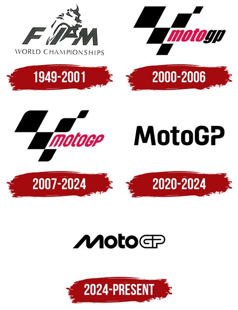
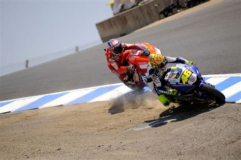
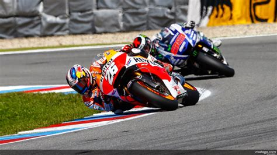

Es consideren els millors en base als títols, a la repercussió i a l'impacte que han tingut en l'esport.



| Pilot | Títols a la classe reina | Repercussió | Impacte |
|---|---|---|---|
| Valentino Rossi | 7 | Molt alta | Molt alt |
| Casey Stoner | 2 | Alta | Alt |
| Jorge Lorenzo | 3 | Alta | Alt |
| Nicky Hayden | 1 | Mitjana | Mitjà |
| Dani Pedrosa | 0 | Alta | Mitjà |